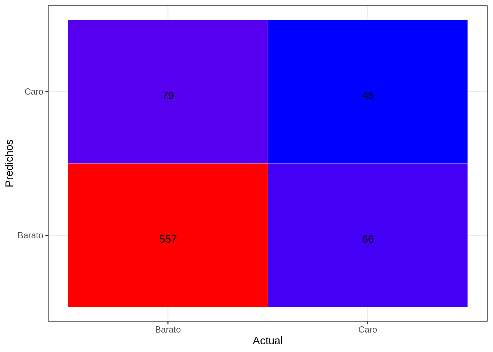
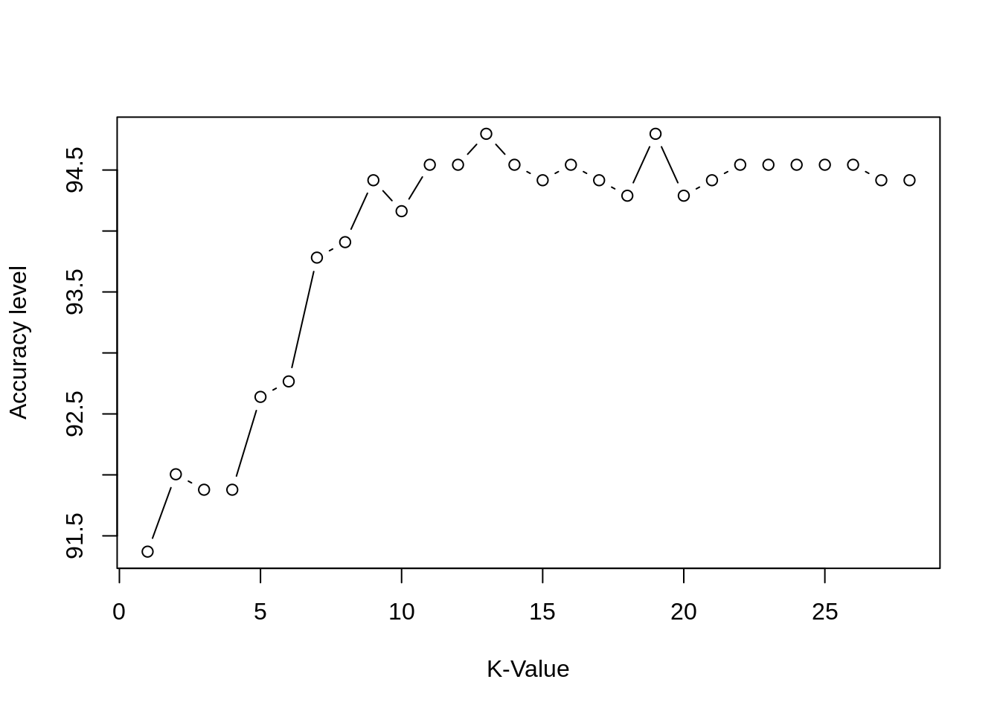
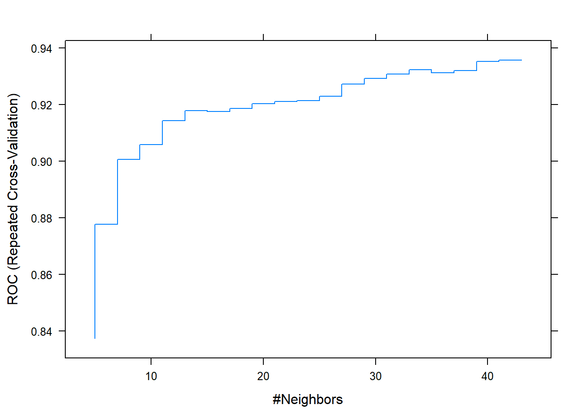

K Nearest Neighbors - KNN
library(class)
library(dplyr)##
## Attaching package: 'dplyr'## The following objects are masked from 'package:stats':
##
## filter, lag## The following objects are masked from 'package:base':
##
## intersect, setdiff, setequal, unionlibrary(caret)## Loading required package: lattice## Loading required package: ggplot2library (ROCR)
library(MASS)##
## Attaching package: 'MASS'## The following object is masked from 'package:dplyr':
##
## selectlibrary(hmeasure)
source("funcs.R")
data(Pima.te) Cargamos los datos que utilizaremos para el entrenamiento, el test y la validación:
dataTrain <- readRDS("datasetTrain.rds")
dataTest <- readRDS("datasetTest.rds")
dataValidation <- readRDS("datasetValidation.rds")
dataTrain<- readRDS("datasetTrainTransformed.rds")
dataTest<- readRDS("datasetTestTransformed.rds")
dataValidation<- readRDS("validationTransformed.rds")Procedemos a despejar de los dataset la variable objetivo original SalePrice. De la cual creamos la variable GrupoPrecio, del tipo categorica.
dataTrain <- dataTrain %>% dplyr::select(-SalePrice)
dataTest <- dataTest %>% dplyr::select(-SalePrice)
dataValidation <- dataValidation %>% dplyr::select(-SalePrice)
group <- c('TotalSF','LotArea','GrLivArea','GrupoPrecio')
dataTrain <- dataTrain %>% dplyr::select(group)
dataTest <- dataTest %>% dplyr::select(group)
dataValidation <- dataValidation %>% dplyr::select(group)A continuación preparamos los dataset para entrenar el modelo y posteriormente evaluar como se comporta con el conjunto de test y finalmente con el grupo de validación.
XTrain <- dataTrain %>% dplyr::select(-GrupoPrecio)
YTrain <- dataTrain$GrupoPrecio
XTest <- dataTest %>% dplyr::select(-GrupoPrecio)
YTest <- dataTest$GrupoPrecio
XValidation <- dataValidation %>% dplyr::select(-GrupoPrecio)
YValidation <- dataValidation$GrupoPreciomodel <- knn(XTrain, XTest, cl = YTrain, k=1)tab_test <- table(model, YTest, dnn = c("Actual", "Predichos"))
(tab_test)## Predichos
## Actual Barato Caro
## Barato 557 79
## Caro 66 45accuracy(tab_test)## [1] 80.58902knn_test_error <- calc_error_rate(predicted.value=model, true.value=YTest)
(knn_test_error)## [1] 0.1941098draw_confusion_matrix(tab_test, "Actual", "Predichos")
#scores.knn <- attr(model, "prob")
#scores.knn[model=="No"] <- 1-scores.knn[model=="No"]
#scores <- data.frame(LDA=scores.knn,kNN=scores.knn)
#results <- HMeasure(YTest,scores)
#par(mfrow=c(2,2))
#plotROC(results,which=1)
#plotROC(results,which=2)
#plotROC(results,which=3)
#plotROC(results,which=4)cm <- confusionMatrix(tab_test)
(cm)## Confusion Matrix and Statistics
##
## Predichos
## Actual Barato Caro
## Barato 557 79
## Caro 66 45
##
## Accuracy : 0.8059
## 95% CI : (0.7757, 0.8337)
## No Information Rate : 0.834
## P-Value [Acc > NIR] : 0.9812
##
## Kappa : 0.2682
##
## Mcnemar's Test P-Value : 0.3190
##
## Sensitivity : 0.8941
## Specificity : 0.3629
## Pos Pred Value : 0.8758
## Neg Pred Value : 0.4054
## Prevalence : 0.8340
## Detection Rate : 0.7456
## Detection Prevalence : 0.8514
## Balanced Accuracy : 0.6285
##
## 'Positive' Class : Barato
## Obtemos el hiperparametro k (el numero de vecinos que determinaran la clase que predice el modelo), probando una series de valores y evaluando cual da una accuary mayor.
i <- 1
k <- 1
for(i in 1:100){
model <- knn(XTrain, XTest, cl = YTrain, k=i)
tab_test <- table(model, YTest, dnn = c("Actual", "Predichos"))
k[i] <- accuracy(tab_test)
opt <- i
cat(opt, '=', k[i], '')
}## 1 = 80.58902 2 = 82.32932 3 = 84.33735 4 = 83.2664 5 = 84.60509 6 = 83.66801 7 = 84.60509 8 = 84.87282 9 = 85.54217 10 = 85.00669 11 = 84.47122 12 = 84.73896 13 = 83.80187 14 = 84.20348 15 = 84.87282 16 = 84.06961 17 = 84.20348 18 = 84.60509 19 = 83.53414 20 = 84.33735 21 = 84.47122 22 = 84.06961 23 = 84.33735 24 = 84.87282 25 = 84.60509 26 = 84.60509 27 = 84.47122 28 = 84.47122 29 = 84.73896 30 = 84.33735 31 = 84.47122 32 = 83.93574 33 = 84.06961 34 = 83.53414 35 = 83.93574 36 = 84.20348 37 = 84.33735 38 = 84.47122 39 = 84.06961 40 = 84.06961 41 = 84.06961 42 = 84.47122 43 = 84.06961 44 = 84.33735 45 = 84.47122 46 = 84.73896 47 = 84.60509 48 = 84.60509 49 = 84.33735 50 = 84.33735 51 = 84.47122 52 = 84.33735 53 = 84.47122 54 = 84.20348 55 = 84.33735 56 = 84.47122 57 = 84.20348 58 = 84.20348 59 = 84.20348 60 = 84.20348 61 = 84.33735 62 = 84.20348 63 = 84.06961 64 = 83.93574 65 = 83.80187 66 = 84.20348 67 = 83.80187 68 = 83.93574 69 = 84.06961 70 = 84.20348 71 = 84.06961 72 = 84.06961 73 = 84.06961 74 = 83.66801 75 = 83.93574 76 = 83.80187 77 = 84.06961 78 = 83.80187 79 = 83.80187 80 = 83.80187 81 = 83.80187 82 = 84.06961 83 = 83.80187 84 = 84.06961 85 = 83.80187 86 = 84.06961 87 = 83.93574 88 = 83.93574 89 = 84.06961 90 = 83.93574 91 = 84.06961 92 = 83.66801 93 = 84.06961 94 = 84.06961 95 = 84.06961 96 = 83.93574 97 = 83.80187 98 = 83.66801 99 = 83.66801 100 = 83.40027plot(k, type="b", xlab="K-Value", ylab="Accuracy level")
(k)## [1] 80.58902 82.32932 84.33735 83.26640 84.60509 83.66801 84.60509 84.87282
## [9] 85.54217 85.00669 84.47122 84.73896 83.80187 84.20348 84.87282 84.06961
## [17] 84.20348 84.60509 83.53414 84.33735 84.47122 84.06961 84.33735 84.87282
## [25] 84.60509 84.60509 84.47122 84.47122 84.73896 84.33735 84.47122 83.93574
## [33] 84.06961 83.53414 83.93574 84.20348 84.33735 84.47122 84.06961 84.06961
## [41] 84.06961 84.47122 84.06961 84.33735 84.47122 84.73896 84.60509 84.60509
## [49] 84.33735 84.33735 84.47122 84.33735 84.47122 84.20348 84.33735 84.47122
## [57] 84.20348 84.20348 84.20348 84.20348 84.33735 84.20348 84.06961 83.93574
## [65] 83.80187 84.20348 83.80187 83.93574 84.06961 84.20348 84.06961 84.06961
## [73] 84.06961 83.66801 83.93574 83.80187 84.06961 83.80187 83.80187 83.80187
## [81] 83.80187 84.06961 83.80187 84.06961 83.80187 84.06961 83.93574 83.93574
## [89] 84.06961 83.93574 84.06961 83.66801 84.06961 84.06961 84.06961 83.93574
## [97] 83.80187 83.66801 83.66801 83.40027Una vez obtenida la k más optima podemos ver que el modelo funciona mejor.
model <- knn(XTrain, XTest, cl = YTrain, k=8)tab_test <- table(model, YTest, dnn = c("Actual", "Predichos"))
(tab_test)## Predichos
## Actual Barato Caro
## Barato 588 81
## Caro 35 43draw_confusion_matrix(tab_test, "Actual", "Predichos")
accuracy(tab_test)## [1] 84.47122knn_test_error <- calc_error_rate(predicted.value=model, true.value=YTest)
(knn_test_error)## [1] 0.1552878cm <- confusionMatrix(tab_test)
(cm)## Confusion Matrix and Statistics
##
## Predichos
## Actual Barato Caro
## Barato 588 81
## Caro 35 43
##
## Accuracy : 0.8447
## 95% CI : (0.8167, 0.87)
## No Information Rate : 0.834
## P-Value [Acc > NIR] : 0.2319
##
## Kappa : 0.3413
##
## Mcnemar's Test P-Value : 2.939e-05
##
## Sensitivity : 0.9438
## Specificity : 0.3468
## Pos Pred Value : 0.8789
## Neg Pred Value : 0.5513
## Prevalence : 0.8340
## Detection Rate : 0.7871
## Detection Prevalence : 0.8956
## Balanced Accuracy : 0.6453
##
## 'Positive' Class : Barato
## Utilizamos el conjunto de validación para comprobar nuestro modelo.
model <- knn(XTrain, XValidation, cl = YTrain, k=8)tab_validation <- table(model, YValidation, dnn = c("Actual", "Predichos"))
(tab_validation)## Predichos
## Actual Barato Caro
## Barato 201 32
## Caro 19 18draw_confusion_matrix(tab_validation, "Actual", "Predichos")
accuracy(tab_validation)## [1] 81.11111knn_validation_error <- calc_error_rate(predicted.value=model, true.value=YValidation)
(knn_validation_error)## [1] 0.1888889cm <- confusionMatrix(tab_validation)
(cm)## Confusion Matrix and Statistics
##
## Predichos
## Actual Barato Caro
## Barato 201 32
## Caro 19 18
##
## Accuracy : 0.8111
## 95% CI : (0.7592, 0.856)
## No Information Rate : 0.8148
## P-Value [Acc > NIR] : 0.59888
##
## Kappa : 0.3042
##
## Mcnemar's Test P-Value : 0.09289
##
## Sensitivity : 0.9136
## Specificity : 0.3600
## Pos Pred Value : 0.8627
## Neg Pred Value : 0.4865
## Prevalence : 0.8148
## Detection Rate : 0.7444
## Detection Prevalence : 0.8630
## Balanced Accuracy : 0.6368
##
## 'Positive' Class : Barato
##